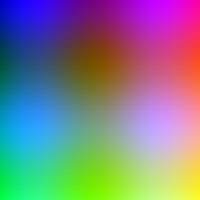

图片引用方式演示
在 Markdown 中引用图片有两种常见方式：绝对路径 和 相对路径。
1. 绝对路径引用 🌐
使用完整的 URL 地址引用外部图片：
1 |  |
效果如下：
💡 适用场景：引用外部图床、CDN 上的图片，或者跨站引用。
2. 相对路径引用 📁
使用相对于当前页面的路径引用本地图片：
1 |  |
效果如下：

💡 适用场景：引用博客本地
source/image/目录下的图片资源。
两种方式对比
| 对比维度 | 绝对路径 | 相对路径 |
|---|---|---|
| 格式 | https://example.com/1.png |
../image/1.png |
| 图片位置 | 外部服务器 | 本地项目中 |
| 加载速度 | 取决于外部服务器 | 快（同源加载） |
| 可控性 | 低（依赖外部） | 高（自主管理） |
| 适用场景 | CDN 图片、图床 | 站点内置资源 |
📂 本项目中的图片目录结构
1 | source/ |
🎯 最佳实践：重要图片（Logo、文章配图等）建议放在项目中用相对路径引用；大型图片或临时图片可以放图床用绝对路径引用。